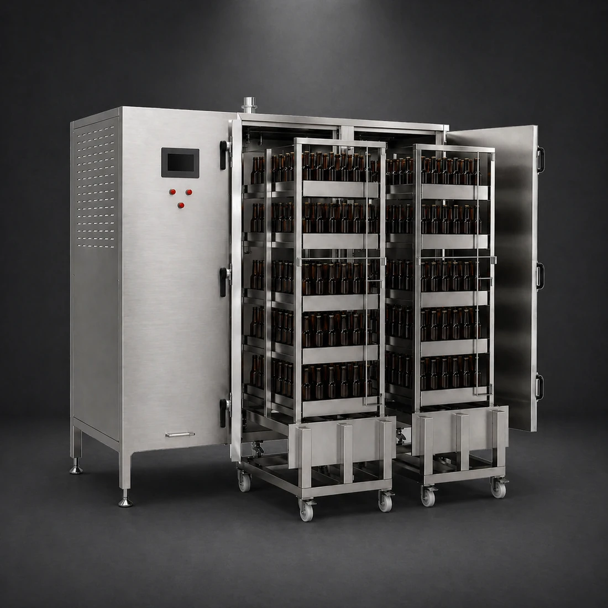

Batch pasteurisation
Cabinet Pasteuriser
Batch Capacity: 840 bottles per cycle
The Cabinet Pasteuriser is a batch pasteurisation unit for bottled and canned beer, milk, and other beverages. Manufactured in SS304 stainless steel, it uses steam within an enclosed chamber to heat packaged product under controlled conditions, with pasteurisation temperature and holding time set according to the product requirement.
It is suited to smaller production runs, speciality products, and operations where batch treatment is preferable to inline pasteurisation. The system supports adjustable temperature and time control, uniform steam exposure inside the cabinet, and controlled cooling after the holding phase.


TECHNICAL DETAILS
Process Description
1. Batch Loading
Filled bottles or cans are loaded into the cabinet chamber in controlled batch volumes. The enclosed format allows packaged product to be treated after filling, making it suitable for smaller runs and applications where final-container pasteurisation is required.
2. Heat-Up and Holding Cycle
Steam is introduced into the chamber to raise the packaged product to the required pasteurisation temperature. Time and temperature are controlled through the programmed cycle so the batch receives the specified thermal treatment with consistent exposure across the load.
3. Cooling and Batch Discharge
Once the holding phase is complete, the cabinet moves into a controlled cooling stage before the batch is unloaded. This helps stabilise the packaged product, supports repeatable process conditions, and prepares the containers for downstream handling or storage.
Batch Pasteurisation
-
Packaged Product Treatment
Pasteurises bottled or canned product after filling, making it suitable for beer, milk, and other beverages requiring shelf-life improvement in final container format.
-
Adjustable Time and Temperature
Operators can set pasteurisation parameters according to product type, packaging format, and required pasteurisation units.
-
Uniform Heat Exposure
Steam circulation inside the cabinet supports even heat distribution across the batch, reducing variation between containers.
Operation & Safety
-
Compact Batch Format
Suitable for smaller breweries or beverage producers that do not require continuous inline pasteurisation capacity.
-
Automatic Temperature Control
Temperature is automatically controlled during the cycle, reducing operator workload and improving repeatability.
-
Controlled Cooling Phase
Cooling water brings product back towards ambient temperature after pasteurisation, reducing handling risk and preparing product for storage.
Four available configurations
-
Single-Cabin Pasteuriser
Compact cabinet configuration for smaller batch volumes, typically used by craft breweries or beverage producers with moderate packaged product throughput.
-
Double-Cabin Pasteuriser
Higher-capacity cabinet configuration with two batch chambers, increasing packaged product volume per cycle while retaining batch pasteurisation control.
-
Electric Heating Configuration
Uses integrated electric heating where steam supply is unavailable or where a self-contained pasteurisation unit is preferred.
-
Steam-Supply Configuration
Uses customer-supplied or integrated steam generation depending on site utilities, production volume, and installation requirements.
| Parameter | Value | Unit / notes |
|---|---|---|
| System Type | Cabinet / tunnel pasteurisation | Batch or continuous |
| Construction | Stainless steel (sanitary design) | Hygienic processing |
| Process Control | PLC / HMI | Temperature & cycle control |
| Heating / Cooling | Multi-zone thermal process | Pasteurisation + cooling stages |
| CIP Compatibility | Yes | Hygienic operation |
| Application | Packaged beverages | Beer, RTD, soft drinks |
CONTACT US
Request a quote
Send us your details and we'll be in touch to walk you through configurations, pricing and lead time.